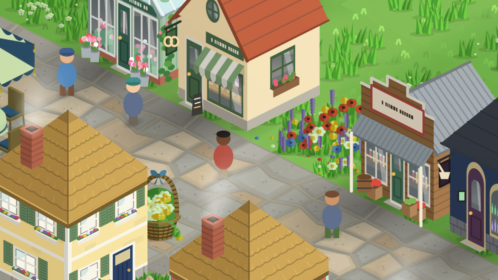
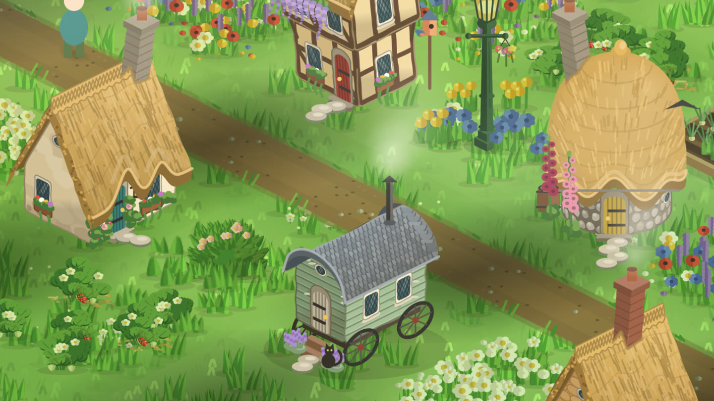

Your first week in StepHaven
A short beginner's guide: where your points come from, what to build first, and the small surprises that turn up once you've walked a few days.

StepHaven is a cozy town builder you play by walking. The steps your iPhone counts become points, and you spend them on a little town: cottages, gardens, paths, ponds, lanterns, trains. There's no rush and nothing to lose by taking a day off. Here's what the first week usually looks like.
Day one: connect Health and take the tour
When you first open StepHaven it asks to read your steps from Apple Health. Say yes and today's steps count straight away. Steps from before you installed don't, so everyone starts level. You also get a welcome kit of about sixty pieces (trees, flowers, a bench and more) and 300 steps to spend, so you can build something before your first walk.
The tutorial is five quick lessons: place a tree, plant flowers round it, put down a bench, turn it, and put it away again. Then it shows you the shop. You can skip it, and you can replay it later from Settings, in a practice town where nothing you do is saved.
Use a wheelchair? Tick "I use a wheelchair" while setting up and pushes from your Apple Watch earn points too.
Workouts like cycling and swimming can earn too. How pushes and workouts count.
What to build first
Prices are set by real walking effort. Small things like grass, flowers and paths cost a lap round the house. A cottage is an afternoon stroll. A landmark is a big weekend. An ordinary day of around five thousand steps buys a few houses, so you'll see the town grow every day.
- Lay paths first. Houses look better joined up, and villagers walk along them.
- Then a few homes. Each home brings villagers who head out on errands, visit benches and chat to each other.
- Then fill the gaps. Trees, flower beds, lamps and a well or fountain make a street feel lived in.
Ground paints (grasses, sand, snow, rocky ground) and water are free, so you can shape the land as much as you like before you spend anything on it.

The build controls, in thirty seconds
- The + button opens Build (with the Shop inside it), Put Away, your Rewards, photo mode and Settings.
- Tap to place. A see-through version appears; tap ✓ to put it down. Tapping the same tile twice also places it.
- Hold anything you've built to turn it, change its style, move it or put it away. Anything you put away goes back into your inventory, so nothing is wasted.
- Lay runs in one stroke. Switch on dragging in the Build panel, then press and drag to lay a path, fence or wall, and tap ✓ when it looks right.
Every day: the present by the flag
Once a day a present appears by your town flag. What's inside depends a little on how much you walked the day before: a good walk raises the odds of a better present. It could be steps, a booster that makes your steps count for more for a few hours, or new pieces for your town. Presents run in a seven-day week, and the seventh day brings a bigger hamper. Miss a day and the week simply steps back one, so a busy day never wipes out your progress.
Wild animals visit too. Rabbits, deer, foxes and horses wander in, and now and then one leaves a little present behind. Gardens with trees and flowers draw more of them.
Visitors to town
After your first few days you'll start to meet travellers. Each one sells something you can't get in the ordinary shop.
| Visitor | When |
|---|---|
| Wendel, the travelling merchant | Every few days, for a few hours, with bargains and the odd curiosity |
| Barnaby Moon's Moonfair | On every real full moon, for a day |
| Marigold, the Sundown Trader | Some evenings after a long day's walk |
A name tag floats over each of them, and an arrow at the edge of the screen points the way when they're out of view. Tap them to open their stall.
Your first house from the Workshop
The Workshop is where you design your own buildings. Pick a shape, a style, a roof, a door colour and a few extras like flower boxes or a chimney, name it, and it goes into your inventory to place like anything else. The Small House, Big House and Long House, the Cottage and Barn styles, and the colours are all free. More shapes and styles come with StepHaven+.
Levels and goals
Your steps also earn experience, and your level climbs as you walk. Some levels unlock new pieces in the shop, from a signpost and a hot-air balloon to bridges and grand monuments, so there's always something on the horizon. Tap the level pill to see every reward on the way up.
If something in the shop costs more than you have, StepHaven remembers it as what you're saving for. Add the Saving For widget to your Home Screen and you can watch the steps you need tick down as you walk.
A few small tips
- Your town follows your phone's clock and the real seasons, so come back after dark to see the lamps lit. More on seasons and time of day.
- Share a town with up to three friends and build together, each with your own steps. How shared towns work.
- Points can never be bought, and there are no ads. Every house in your town is one you walked for.
StepHaven: Cozy Town Builder
Free on iPhone. No ads, and your steps stay on your phone.
Download on theApp Store